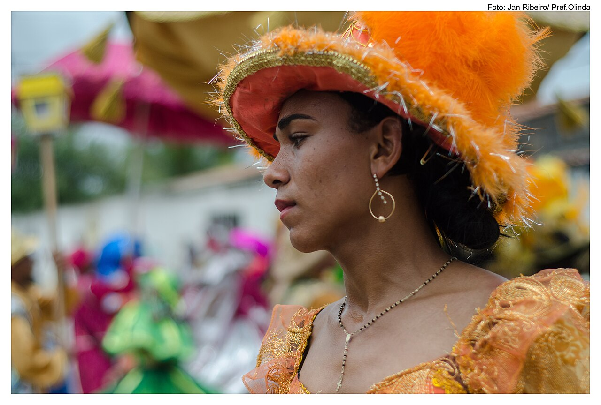
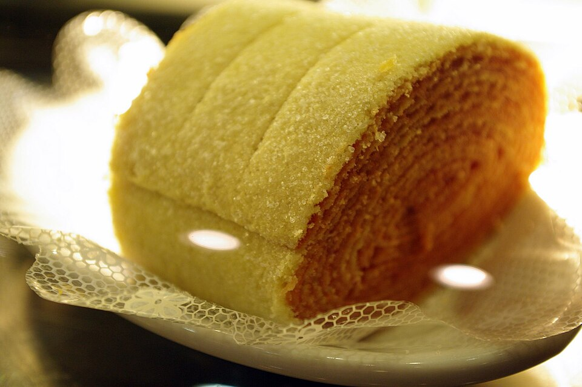

Festas e Tradições
Do frevo ao maracatu, descubra celebrações e costumes que mantêm viva a cultura pernambucana.
Conheça as tradições
Nossa proposta
O Encantos de Pernambuco tem o objetivo de apresentar e valorizar a riqueza cultural do estado. Aqui, você vai conhecer manifestações que atravessam gerações e sabores que contam histórias.
Explore os temas
Conheça os dois assuntos que vamos explorar por aqui.

Do frevo ao maracatu, descubra celebrações e costumes que mantêm viva a cultura pernambucana.
Conheça as tradições
Saboreie um pouco de Pernambuco com pratos, ingredientes e receitas cheios de história.
Descubra os sabores